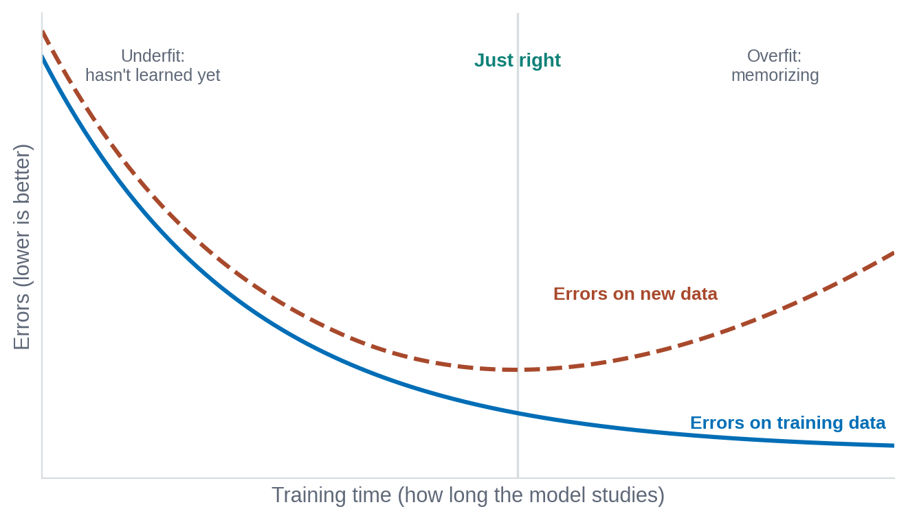
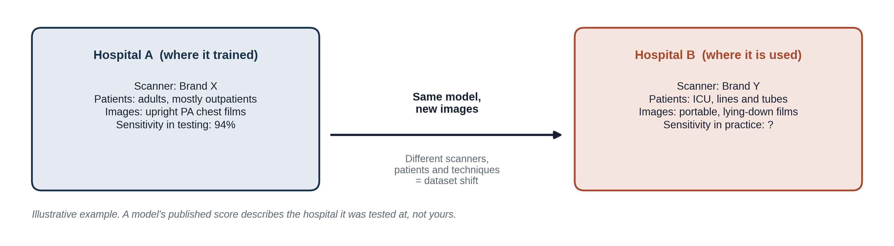
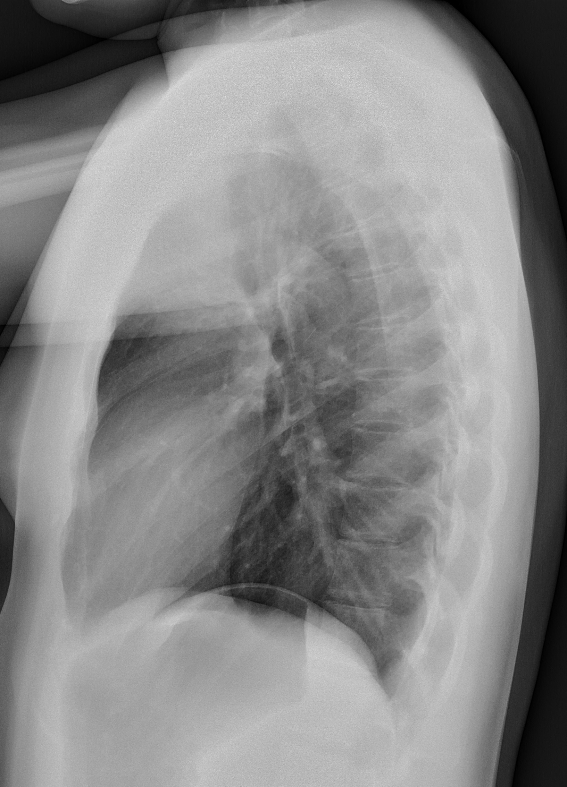

Research LabFive hands-on notebooks · open now
Build and evaluate models yourself: write code, test a model on real data and run a small project of your own.
- Python & GitHub
- Data science
- ML & imaging
- Advanced AI & NLP
- Mini project

Clinical AI education for radiology, from foundations to practice.
Explore the curriculumNew here? Start with the 15-question pre-course check. It suggests lessons you could skip; you choose the final plan.
Each takes 15 to 20 minutes and has a few ungraded checks and one hands-on piece. Finish them and the post-course check for the certificate.
Open any time, separate from the core certificate. Module 1 is useful background for both.
Build and evaluate models yourself. Hands-on notebooks for learners who want to write code, test a model on real data and run a small project of their own.
How a tool gets into a department. For clinical, informatics and quality leads who choose, test and govern AI. Lessons are coming; the overview is open now.
| Research Lab | Leadership | |
|---|---|---|
| For | Learners who want to write code and test models themselves | Clinical, informatics and quality leads who choose and govern AI |
| You will | Train a model on real data and run a small project of your own | Take one tool from a stated need to safe, monitored use |
| Format | Five hands-on notebooks | Five short lessons, with an overview page |
| Steps |
|
|
| Status | Open now | Overview open, lessons coming |
| Links | Open the Research Lab | Read the overview |
Build and evaluate models yourself: write code, test a model on real data and run a small project of your own.

How a tool gets into a department, for the clinical, informatics and quality leads who choose, test and govern it.

Build and evaluate models yourself. Hands-on notebooks for learners who want to write code, test a model on real data and run a small project of their own.
How a tool gets into a department. For clinical, informatics and quality leads who choose, test and govern AI. Lessons are coming; the overview is open now.
Pick lessons and the post-course check, then share one link. Learners see your plan in their progress panel, and the certificate lists what you assigned. A live class dashboard is in planning.
Open the plan builder

ai2practice/plan/pgy2-bodyChanges to the course and notes on AI in radiology, as they happen.
Read the AI2Practice BriefA place to swap rotation plans, ask about cases and suggest new lessons. First channels: Core curriculum, Research Lab, Leadership and Educators.